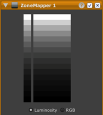

 ZoneMapper værktøjet gør det muligt at justere lysstyrke og kontrast for alle dele af dit billede, til enhver kombination af højlys, mellemtone og skygge.
ZoneMapper værktøjet viser 16 gråtone zoner, hver afvigende med 50% lysstyrke eller et halvt f-stop til det næste. ZoneMappe værktøjet er baseret på Zone Systemet.
For at lære mere om at benytter ZoneMapper værktøjet klik neden for.